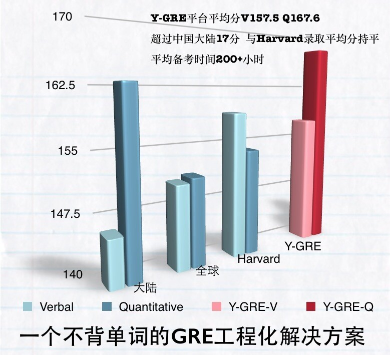

云英语
云英语：因学术而改变
本期云英语微讲堂，将举行Y-GRE高分奖学金颁发暨经验交流会。届时，我们将邀请近期部分高分研修者（GRE总分330+）与大家分享自己的备考经验与各种心得。大家都知道VB和Y-GRE是基于语言学技术的高端学术产品，不只是针对GRE考试，而且可以极大地提高批判思维和学术阅读的能力。如何更高效更有针对性地使用VB和Y-GRE产品，如何更好地利用云英语的各种资源，以便于在最合理的时间里达成目标成绩――这是很多同学非常关心的问题。本次邀请的高分研修者，整体平均备考时间230小时，Y-GRE段用时平均约150小时，一定有很多值得大家借鉴的经验。
本期微讲堂还将邀请Y-GRE技术组李浩老师和曹子聪老师与大家座谈，分析近期GRE考试趋势及语料偏好。今年以来GRE考试是否在与GMAT的竞争中对整体难度进行了调整？GRE对词汇考察的要求有没有变化以及如何看待词汇在GRE备考中所占的比重？GRE机经还有没有用以及ETS如何应对？我到底该花多少时间准备GRE，我到底考到什么成绩才够用？对于尚未开始GRE备考的同学，本期微讲堂将为大家介绍如何根据自己的客观情况设计合理的备考框架，以及如何兼顾GRE与GPA和科研。
本期微讲堂不设准入限制，欢迎大家自行携带小伙伴参加。
时间：2015年5月16日15:00-17:00
地点：五道口研修基地（华清商务会馆1707）
版权所有 2011-2015 云英语 Y-English All Rights Reserved
地址：北京市海淀区五道口华清嘉园商务会馆802
电话：400-876-3898 010-82863898 82863899 传真：010-82863897